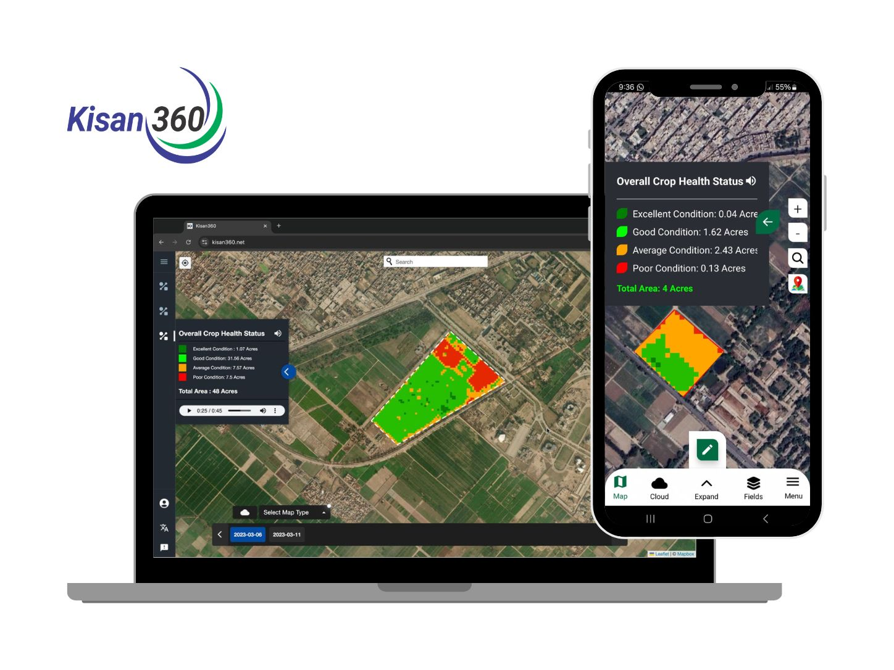
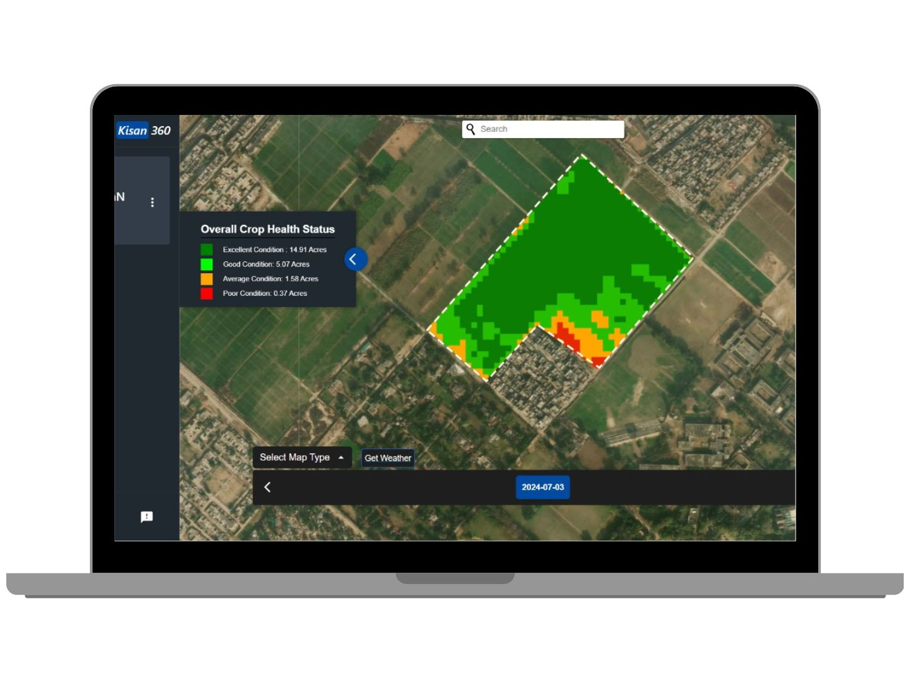
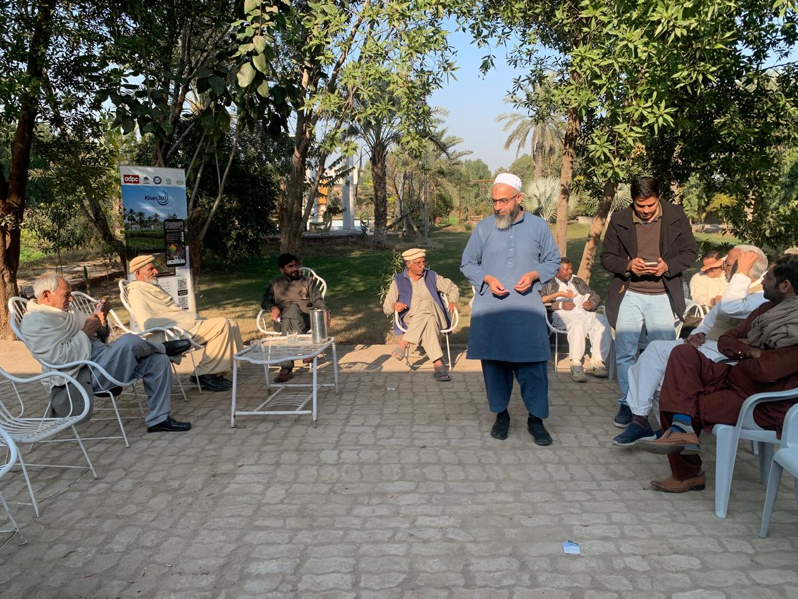

Sentinel-2
Multispectral observations for registered agricultural fields.

Translating field-scale Earth-observation products into practical crop-monitoring information for farmers, extension personnel and agricultural institutions.
Kisan360 was developed as part of an ADPC iCARE climate-smart agriculture project implemented through the University of Agriculture Faisalabad. The project aimed to make field-scale Earth-observation information easier to use in practical crop monitoring and agricultural extension.
My contribution focused on the remote-sensing, geospatial and implementation aspects of the project. This included developing automated Google Earth Engine workflows for filtering imagery by user-defined date ranges, clipping data to field boundaries, applying cloud masking, and deriving Sentinel-2 crop indicators such as NDVI, NDWI and CIre. I also worked on translating continuous satellite-derived indicators into simpler crop-condition classes, supported field activities, and participated in stakeholder training and technical reporting.
How can satellite-derived crop indicators be simplified and delivered in a form that is understandable and useful beyond the remote-sensing research environment?

The workflow connected Sentinel-2 processing with simplified crop-condition information delivered through web and mobile interfaces.
Multispectral observations for registered agricultural fields.
Automated filtering, cloud masking, field clipping and geospatial processing workflows.
NDVI, NDWI and CIre for vegetation, water-status and chlorophyll-sensitive information.
Satellite-derived indicators translated into simplified categories for practical interpretation.
Maps and field-level summaries delivered through web and mobile interfaces.
The project extended beyond analytical development into platform delivery, field testing, farmer and extension engagement, and institutional training.


Kisan360 complemented my crop-modeling research by giving me experience with the practical side of Earth observation, particularly how technical outputs can be simplified and presented in a way that is useful for farmers, extension staff and other non-specialist users.
The project also involved field activities, demonstrations, farmer feedback, extension work and technical reporting, which gave me a better understanding of how geospatial research can be applied beyond analysis and used in practical decision-support settings.